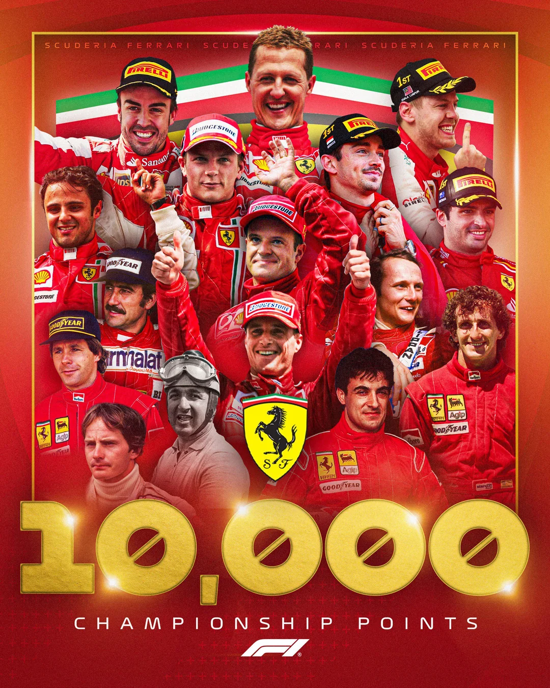

Ferrari F1 Pilóták
A Ferrari történetének legnagyobb versenyzői.
- Michael Schumacher - 7-szeres világbajnok, Ferrari legendája.
- Kimi Räikkönen - 2007-es világbajnok a Ferrarival.
- Fernando Alonso - Kétszeres világbajnok, több szezonban a Ferrari versenyzője.
- Sebastian Vettel - 4-szeres világbajnok, 2015 és 2020 között a Ferrari pilótája.
- Charles Leclerc - A jelenlegi Ferrari versenyzője, fiatal tehetség.
- Lewis Hamilton - Leclerc csapattársa, idén kezdi ferráris karrierjét a 7 szeres britt pilóta
